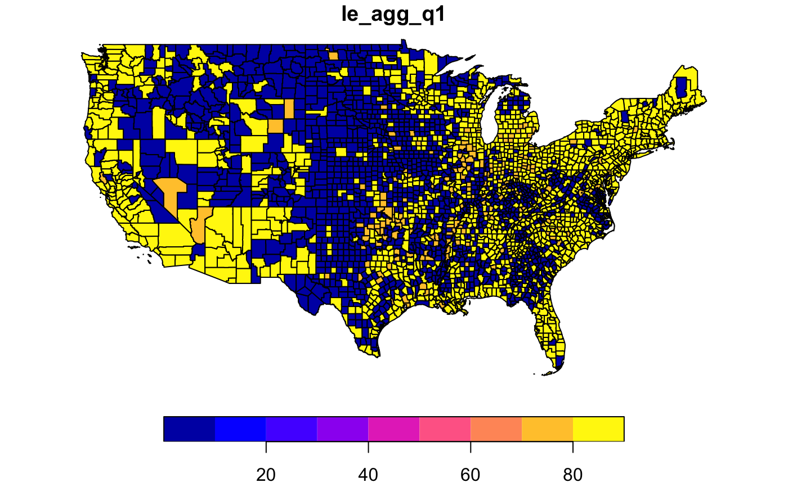

Income, race, and public health statistics for US counties.
healthplus
An sf data frame with 3984 rows, 64 variables, and a geometry column:
Carto ID
County FIPS ID
State FIPS code
State name
County name and State
County FIPS code
The county’s median income divided by the state’s median income
County’s population in 2000
Female life expectancy, 1st Income Quartile, not adjusted for race.
Female life expectancy, 1st Income Quartile, adjusted for race.
Female life expectancy, 2nd Income Quartile, not adjusted for race
Female life expectancy, 2nd Income Quartile, adjusted for race
Female life expectancy, 3rd Income Quartile, not adjusted for race
Female life expectancy, 3rd Income Quartile, adjusted for race
Female life expectancy, 4th Income Quartile, not adjusted for race
Female life expectancy, 4th Income Quartile, adjusted for race
Male life expectancy, 1st Income Quartile, not adjusted for race
Male life expectancy, 1st Income Quartile, adjusted for race
Male life expectancy, 2nd Income Quartile, not adjusted for race
Male life expectancy, 2nd Income Quartile, adjusted for race
Male life expectancy, 3rd Income Quartile, not adjusted for race
Male life expectancy, 3rd Income Quartile, adjusted for race
Male life expectancy, 4th Income Quartile, not adjusted for race
Male life expectancy, 4th Income Quartile, adjusted for race
Standard error for female life expectancy, 1st income Quartile, not adjusted for race.
Standard error for female life expectancy, 1st income Quartile, adjusted for race.
Standard error for female life expectancy, 2nd income Quartile, not adjusted for race.
Standard error for female life expectancy, 2nd income Quartile, adjusted for race.
Standard error for female life expectancy, 3rd income Quartile, not adjusted for race.
Standard error for female life expectancy, 3rd income Quartile, adjusted for race.
Standard error for female life expectancy, 4th income Quartile, not adjusted for race.
Standard error for female life expectancy, 4th income Quartile, adjusted for race.
Standard error for male life expectancy, 1st income Quartile, not adjusted for race.
Standard error for male life expectancy, 1st income Quartile, adjusted for race.
Standard error for male life expectancy, 2nd income Quartile, not adjusted for race.
Standard error for male life expectancy, 2nd income Quartile, adjusted for race.
Standard error for male life expectancy, 3rd income Quartile, not adjusted for race.
Standard error for male life expectancy, 3rd income Quartile, adjusted for race.
Standard error for male life expectancy, 4th income Quartile, not adjusted for race.
Standard error for male life expectancy, 4th income Quartile, adjusted for race.
Female count, 1st income quartile.
Female count, 2nd income quartile.
Female count, 3rd income quartile.
Female count, 4th income quartile.
Male count, 1st income quartile.
Male count, 2nd income quartile.
Male count, 3rd income quartile.
Male count, 4th income quartile.
Diversity Index
Asian alone, percent
Native Hawaiian, percent
Two or more races, percent
Hispanic, percent
White alone, percent
Multiple sources: (1) ratio from https://philpierdo2.carto.com/me, (2) race and diversity index source: https://www.kaggle.com/mikejohnsonjr/us-counties-diversity-index and (3) income and life expectancy variables obtained from: Chetty, Stepner, Abraham, Lin, Scuderi, Turner, Bergeron, and Cutler (2016). The Association Between Income and Life Expectancy in the United States, 2001-2014. Health Statistics by County.
Sf object, unprojected. EPSG 4326: WGS84.
if (requireNamespace("sf", quietly = TRUE)) { library(sf) data(healthplus) plot(healthplus["le_agg_q1"]) }